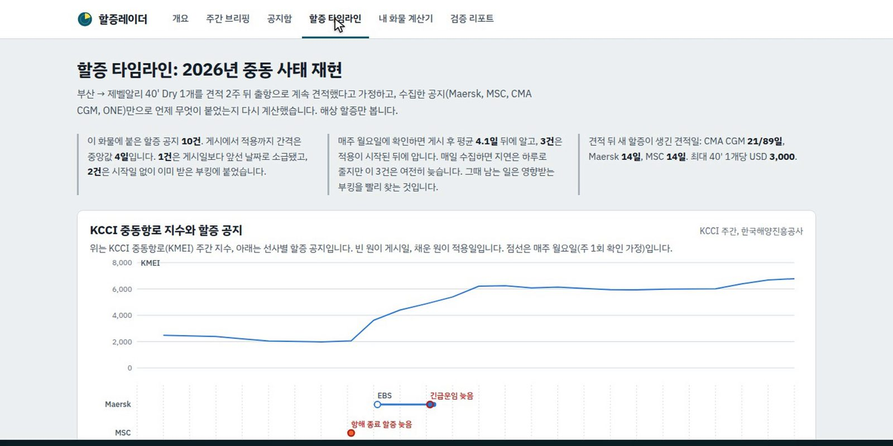

Evaluation
정답셋을 직접 만들어 추출기 3종을 같은 잣대로 비교했습니다
정답셋 45건(pilot 3 / dev 11 / test 31)을 라벨링 스키마 v0.2와 가이드로 직접 만들고, test 294개 레코드를 원문과 전수 대조했습니다. 정규식은 dev 104개 중 27개에서 test 8개로 붕괴했고, 소형 모델(Haiku)은 195개로 레코드 43개짜리 긴 공지에서 0개였으며, Sonnet은 280개(95.2%)였습니다. 자동 승인 오류 4개는 전부 CMA CGM 위험물 할증을 일반 Dry로 적은 것이라 IMDG 검사 규칙을 다음 과제로 남겼습니다.
해수부 화물운임공표 API 41,404행(중동 16개 항만)을 집계해 긴급·전쟁 관련 표기 19,292행 중 4,404행이 비고란에만 있다는 것도 확인했습니다. 주 1회 확인 시 공지 인지 지연이 평균 4.1일인데 매일 수집하면 1일 이내로 줄어듭니다.


한계도 명시 — 정답과 AI가 같은 Claude 계열이고, 표본이 test 31건·선사 7곳으로 작으며, "주 1회 확인"과 "견적 후 14일 출항"은 가정입니다. 실제 포워더 예약·청구 연계는 가상 433건으로 대체했습니다.